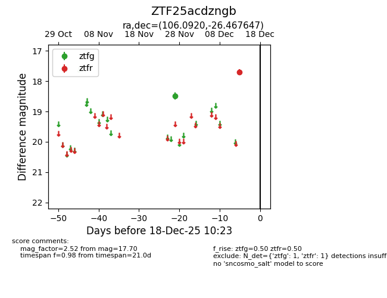
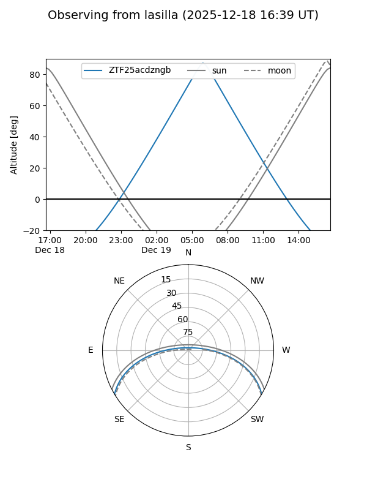
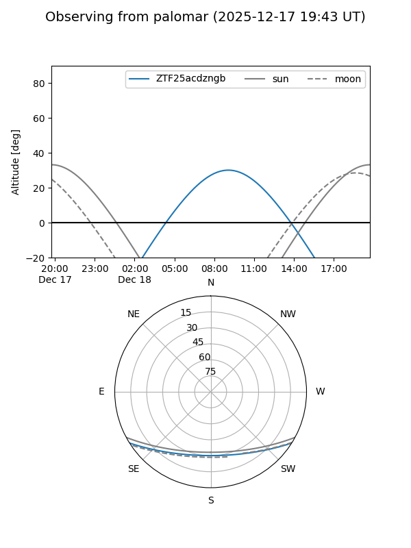

ZTF25acdzngb
Target ZTF25acdzngb at 2025-12-18 11:17
Aliases and brokers:
FINK: fink-portal.org/ZTF25acdzngb
Lasair: lasair-ztf.lsst.ac.uk/objects/ZTF25acdzngb
ALeRCE: alerce.online/object/ZTF25acdzngb
alt names
ZTF25acdzngb (ztf,fink_ztf)
Coordinates:
equatorial (ra, dec) = 106.0920,-26.46765
equatorial (HMS+DMS) = 07:04:22.08,-26:28:03.53
galactic (l, b) = (238.0850,-9.10845)
Photometry
last ztfg=18.48, ztfr=17.70
1 ztfg, 1 ztfr detections
Lightcurve

Visibility


Additional plots